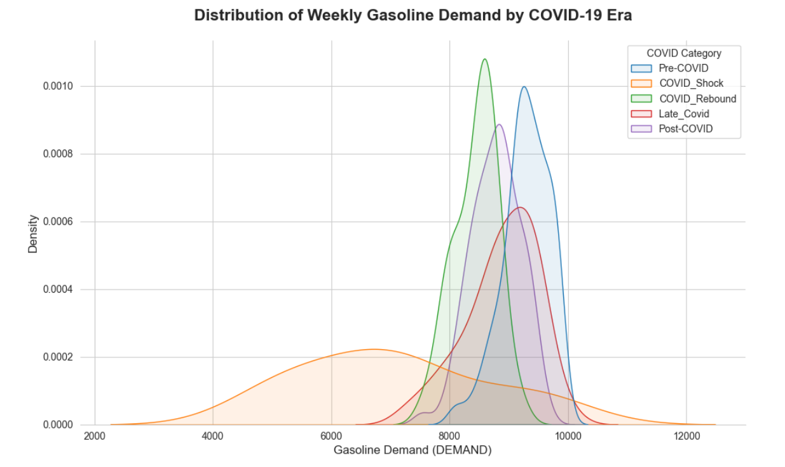
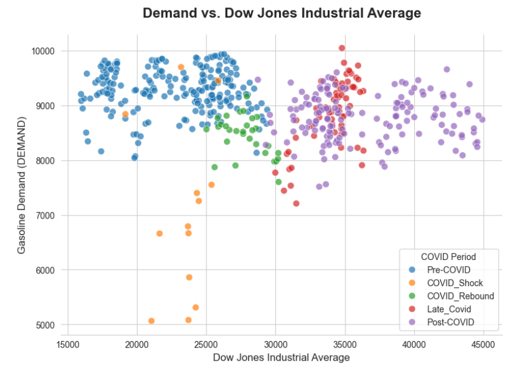
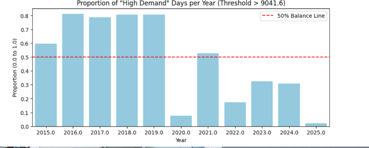

Sunoco Consulting - Demand Prediction
83%
Accuracy
Accuracy
18
Features
Features
4.5
TP/FP Ratio
TP/FP Ratio
Problem
The Sunoco Company needed to accurately predict “High Demand” days to optimize inventory and staffing. A standard accuracy score wasn’t enough; the business cost of a False Positive (missing out on oil sales) was high, but missing a True Positive (overbuying when demand fell) was worse. Thus the goal was to maximize the True Positive to False Positive (TP/FP) ratio.
Approach
- Data Selection: We needed to select the most relevant data that we could find in order for us to accurately predict demand. We chose data that measured economic trends like the GDP growth and S&P 500 growth. We also chose very specific indicators related to fuel like shipping costs and predicted oil reserves.
- Target: Defined “High Demand” dynamically as volume above the rolling 70th percentile for the year. The goal was to maximize the TP/FP ratio.
- Feature Engineering: We hypothesized that splitting the data into time-based segments improves model performance. Our initial analyses showed that covid had a significant effect on the demand of the fuel prices Therefore, we included a category for the pandemic period. We split the category into before, covid, beginning of covid, middle of covid, end of covid, and after covid.
- Validation: Used
TimeSeriesSplitto respect temporal ordering. This was especially important in training the models so they didnt have any data leakage.
Results
- Successfully achieved the client’s benchmark TP/FP ratio of 2.0 (ended at 4.5).
Visualizations
- COVID Shock: COVID significantly impacted oil demand across the entire economy. We incorporated an indicator variable for the pandemic period.

- COVID × The Economy: COVID didn’t just impact oil demand—it affected every facet of the economy, reinforcing the importance of the pandemic indicator variable.

- Wild Swings in Demand by Year: The number of high-demand weeks varied dramatically by year, motivating a rolling 52-week average feature.
